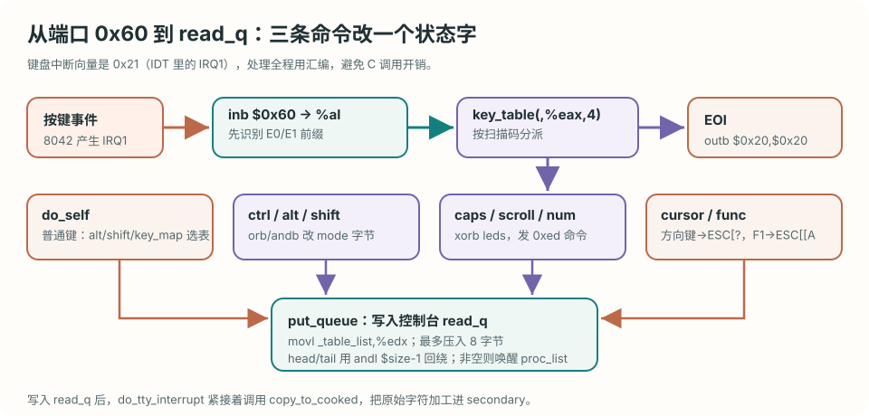
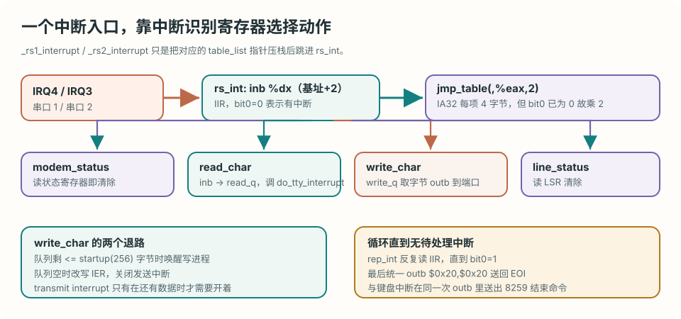

键盘与串口：硬件事件如何进入 read_q
上一章把行规程与控制台讲清楚了，这一章回答更靠前的一问：IRQ1 和 IRQ4 到达 CPU 后，汇编处理程序做了哪些寄存器操作，才让字符出现在 read_q 里？
字符设备 · keyboard.S / serial.c / rs_io.s为什么两种设备共用一条路径？
键盘插在 8042 控制器上，串口一颗 16550 UART 芯片，两者的物理原理毫无关系。但 Linux 0.11 把它们都当作“字符生产者”：中断处理程序把硬件的原始字节放进同一个 read_q，后面的行规程与 read() 完全不关心它来自哪里。这种统一是上一章已经看到的抽象，本章只补上图里缺的前半段——汇编中断如何把字节写进队列。
键盘中断：端口 0x60 与 key_table
kernel/chr_drv/keyboard.S 的全部入口是 _keyboard_interrupt。它由控制台初始化用 set_trap_gate(0x21,&keyboard_interrupt) 挂到中断向量 0x21（即 IRQ1）上。处理开始先保存寄存器并把 ds/es 换成内核数据段选择子 0x10，然后从数据端口 0x60 读入一字节扫描码。
_keyboard_interrupt:
pushl %eax
...
xorl %al,%al
inb $0x60,%al
cmpb $0xe0,%al
je set_e0
cmpb $0xe1,%al
je set_e1
call key_table(,%eax,4)
movb $0,e0
...
movb $0x20,%al
outb %al,$0x20
pushl $0
call _do_tty_interrupt注意它没有testb $0x80,%al 来区分按下与释放：key_table 是一张按完整扫描码（含高位）下标的函数地址表，释放码（如 0x9E）直接指向对应的消除例程。这就是为什么上例中释放事件不需要单独分支。读取 0x61（端口 B）反转 bit7 再复位的动作，是给 8042 的应答；最后向 0x20 写 0x20 才是 8259A 的 EOI。

key_table 的每个表项是一个短例程地址；put_queue 把结果字节写入 _table_list 指向的控制台读队列，而不是直接调用行规程。do_self 与 mode：普通键如何变成字符
绝大多数键（字母、数字、标点）都交给 do_self。它不修改任何状态，只是根据当前 mode 字节选择映射表，再对取出的字符做大小写/控制字符调整：
do_self:
lea alt_map,%ebx
testb $0x20,mode /* alt-gr */
jne 1f
lea shift_map,%ebx
testb $0x03,mode
jne 1f
lea key_map,%ebx
1: movb (%ebx,%eax),%al
...
testb $0x4c,mode /* ctrl or caps */
...
testb $0x0c,mode /* ctrl */
...
testb $0x10,mode /* left alt */
...修饰键本身不产生字符：lshift/rshift 用 orb/andb 打开/清除 mode 的对应位，ctrl/alt 同理；caps、num、scroll 则修改 leds 字节并通过 0x60 端口发送 0xed 命令更新键盘上的指示灯。方向键与功能键走另外的例程：cursor 生成 ESC[? 序列，func 用 func_table 回送 F1 的 ESC[[A。所有路径最终都会调用 put_queue。
为什么同一个字母键在 Shift 按下时会得到大写？（展开核对）
do_self 先看 mode 的 Shift 位（0x03）选用 shift_map，该表在同一个扫描码下标上存放的是大写字符；若 Shift 未按下则回退到 key_map。最终字符由表内容决定，而不是运行时计算。
串口：UART 寄存器与 rs_io.s 分派
kernel/chr_drv/serial.c 的 init(port) 把 UART 配成 2400 bps、8 数据位无校验：先向 port+3（线路控制寄存器 LCR）写 0x80 打开 DLAB，再往 port/port+1 写分频系数 0x30（余数 48，115200/48=2400），最后写 0x03 关闭 DLAB、写 port+4（MCR）拉高 DTR/RTS/OUT2、写 port+1（IER）开启除“发送空”以外的中断。rs_init() 把两个中断入口挂到向量 0x23/0x24，再用 outb(inb_p(0x21)&0xE7,0x21) 在 8259A 上打开 IRQ3/IRQ4。
kernel/chr_drv/rs_io.s 的两个入口各自把 _table_list 中对应队列指针压栈后跳进 rs_int。它的核心是一个 rep_int 循环：反复读 port+2（中断识别寄存器 IIR），只要 bit0==0 就用 jmp_table 按低三位分派，直到没有待处理的中断源才送出 EOI。

read_char 收到一个字节后同样调用 do_tty_interrupt，因此键盘与串口的输入最终都经过同一个 copy_to_cooked。write_char 负责反向：从 write_q 取出一个字节 outb 到数据端口，并在队列剩余不足 startup=256 字节时唤醒等待的写进程；若队列已空，它把 IER 的发送中断位关掉，避免空队列时不断触发中断。
只读验证与正确边界
以下命令只看结构，不需要重编内核或启动模拟器：
grep -n 'inb \$0x60\|call key_table\|key_table:\|put_queue:' kernel/chr_drv/keyboard.S
grep -n 'testb \$0x4c,mode\|lea shift_map' kernel/chr_drv/keyboard.S
grep -n 'outb_p(0x30\|outb_p(0x0d\|set_intr_gate' kernel/chr_drv/serial.c
grep -n 'rep_int\|jmp_table\|read_char:\|write_char:' kernel/chr_drv/rs_io.s预期分别找到端口 0x60 读取、key_table 分派、do_self 的修饰键判断、串口寄存器初始化与 rs_int 的 IIR 循环。key_map 的具体内容随 KBD_* 宏改变（如 KBD_FINNISH），因此“某扫描码等于某 ASCII”只能在确定键盘宏后才成立。这是源码静态实验，不代表在模拟器里按过键或接过串口设备。
原始资料与下一章
- kernel/chr_drv/keyboard.S：_keyboard_interrupt、key_table、do_self、put_queue。
- kernel/chr_drv/serial.c：init、rs_init、rs_write 与端口编程。
- kernel/chr_drv/rs_io.s：rs_int、jmp_table、read_char、write_char。
- kernel/chr_drv/tty_io.c：do_tty_interrupt 与 copy_to_cooked。
驱动把中断变成了队列里的字节，但当它们出错时，内核怎么知道、又能怎么跟？下一章从 printk 和调试器入手，看一个没有 printf 的内核如何报告自己。